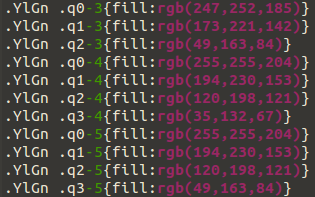

Dans cette activité, nous allons, une fois de plus, nous appuyer sur le site http://www.datavis.fr/, et plus particulièrement sur la partie du site consacrée aux cartes choroplèthes (lire l'article Wikipédia sur les cartes choroplèthes).
Nous allons réaliser une carte choroplèthes consacrée au nombre d'habitants par département. Plus le nombre d'habitants dans un département sera important, plus ce même département apparaitra foncé sur la carte.
Commencez par télécharger le fichier population.csv et analysez-le en l'ouvrant avec un éditeur de texte.
Nous utiliserons aussi le fichier "departments.json" vu dans l'activité précédente.
Attention : dans la suite de cette activité, les fichiers "population.csv" et "departments.json" devront être placés dans le même dossier que le fichier "script.js".
Vous devez modifier votre fichier "index.html" puisque nous allons utiliser un fichier CSS
index.html
<!DOCTYPE html>
<html lang="fr">
<head>
<meta charset="utf-8">
<title>Visualiser des données avec D3</title>
<link rel="stylesheet" href="couleurs.css">
<script src="d3.min.js"></script>
</head>
<body>
</body>
<script src="script.js"></script>
</html>
Créez un fichier "couleurs.css" (ce fichier devra se trouver dans le même dossier sur "index.html" et "script.js").
Voici le contenu de ce fichier "couleurs.css"
couleurs.css
.Reds .q0-9{fill:rgb(255,245,240)}
.Reds .q1-9{fill:rgb(254,224,210)}
.Reds .q2-9{fill:rgb(252,187,161)}
.Reds .q3-9{fill:rgb(252,146,114)}
.Reds .q4-9{fill:rgb(251,106,74)}
.Reds .q5-9{fill:rgb(239,59,44)}
.Reds .q6-9{fill:rgb(203,24,29)}
.Reds .q7-9{fill:rgb(165,15,21)}
.Reds .q8-9{fill:rgb(103,0,13)}
script.js
var body=d3.select("body");
var svg=body.append("svg");
svg.attr({"width":"600px","height":"600px"});
svg.attr("class","Reds");
var path = d3.geo.path();
var projection = d3.geo.conicConformal()
.center([2.454071, 46.279229])
.scale(3000)
.translate([300,300]);
path.projection(projection);
d3.json("departments.json", function(geoJSON) {
var map=svg.selectAll("path").data(geoJSON.features)
map.enter()
.append("path")
.attr("stroke","black")
.attr('id', function(d) {return "d" + d.properties.CODE_DEPT;})
.attr("d", path);
d3.csv("population.csv", function(csv) {
var quantile = d3.scale.quantile().domain([0, d3.max(csv, function(e) { return +e.POP; })]).range(d3.range(9));
csv.forEach(function(e,i) {
d3.select("#d" + e.CODE_DEPT)
.attr("class", function(d) { return "q" + quantile(+e.POP) + "-9"; })
});
});
});
Analysez et testez ce code
Voici ce que vous devriez obtenir
Étudions cet exemple :
Pour commencer, quelques idées générales avant d'entrer dans les détails du code :
Passons maintenant à l'analyse du code :
Vu le contenu du fichier "couleurs.css" (.Reds .q0-9...), nous devons attribuer la classe "Reds" à la balise svg (svg.attr("class","Reds");), comme cela chaque "path" aura bien 2 classes, la classe "Reds" et la classe de son groupe (q0-9, q1-9...ou q8-9). Pourquoi avoir choisi cette structure pour le fichier "couleurs.css" ? Je ne me suis pas "amusé" à coder toutes les couleurs, j'ai utilisé une partie du fichier nuancier.css. Analysons ce fichier
voici une partie du fichier "nuancier.css" :
ci-dessus nous avons une couleur "principale" dénommée "YlGn" (qui correspond à du vert) et différentes teintes ("q0-3", "q1-3"...). Que signifie le x dans q0-x ? Tout simplement le nombre de teintes nécessaires (dans notre exemple nous utilisons 9 teintes différentes, car nous avons 9 groupes, nous utilisons donc les classes se terminant par 9 ("q0-9", "q1-9"....). Si nous avions eu 5 groupes, nous aurions eu besoin de 5 teintes différentes, nous aurions alors utilisé les classe se terminant par 5 ("q0-5", "q1-5"....).
Inutile de créer vos propres nuanciers de couleurs, "copier-coller" les parties qui vous intéressent à partir du contenu du fichier "nuancier.css".
Ce fichier "nuancier.css" est directement issu du site Color Brewer.
Faites les modifications nécessaires afin d'obtenir la même carte choroplèthe que dans le "À faire vous même 16.2" mais en utilisant une autre couleur que le rouge.
Poursuivons l'étude du code du "À faire vous même 16.2" :
Chose très importante à noter, le d3.csv("population.csv", function(csv)... se trouve à "l'intérieur" du d3.json("departments.json", function(geoJSON)...
La ligne .attr('id', function(d) {return "d" + d.properties.CODE_DEPT;}) permet d'attribuer les "id" aux différents départements.
La division des départements en différents groupes est faite grâce à la ligne suivante :
var quantile = d3.scale.quantile().domain([0, d3.max(csv, function(e) { return +e.POP; })]).range(d3.range(9));
Nous utilisons la méthode scale.quantile() de D3js. Le "domain" s'étend de 0 au nombre maximum d'habitants trouvé (utilisation de la méthode "max" : d3.max(csv, function(e) { return +e.POP; })]) (le "+" du +e.POP permet de transformer la chaîne de caractères en nombre)). Le "range" est un tableau qui contient les chiffres de 0 à 8 (d3.range(9) est équivalent à [0,1,2,3,4,5,6,7,8]), chaque élément du tableau correspond à un groupe (nous obtenons donc bien 9 groupes).
Le csv.forEach permet de parcourir l'ensemble des départements présents dans le fichier "population.csv" et d'attribuer une classe (de "q0-9" à "q8-9") à chaque "path" (chaque département sur la carte). Afin de ne pas avoir directement le nombre d'habitants, mais plutôt le groupe du département nous avons écrit quantile(+e.POP) à la place d'un simple +e.POP. Nous avons donc la concaténation suivante : "q"+numéro du groupe+"-9", ce qui correspond bien aux classes présentes dans le fichier "couleurs.css".
Il est possible d'ajouter une légende à notre carte choroplèthe
En vous inspirant de ce qui a déjà été fait ci-dessus et des explications données sur le site http://www.datavis.fr/, ajoutez une légende à la carte.
Télécharger le fichier "dep74.xls" sur le site de l'INSEE (cliquez sur "Format xls, 85 ko")
Étudiez ce fichier en l'ouvrant avec un tableur
Récupérer (en faisant un "copier-coller") les données nécessaires afin de créer un fichier au format CSV qui vous permettra de produire une carte choroplèthe consacrée au nombre d'habitants par communes
Créez un programme permettant d'obtenir ceci
Comme vous l'avez sans doute remarqué, la représentation ci-dessus n'est pas très pertinente : il y a énormément de communes en vert très clair. Cela vient du fait que dans le département il y a une "grosse" ville (Annecy) et beaucoup de petites communes (moins de 5000 habitants). Toutes les communes de moins de 5000 habitants sont représentées en vert très clair (qu'elles aient 100 ou 4500 habitants) : cela vient du fait que nous avons une échelle qui va de 0 à 50000. Une des solutions serait de ne pas tenir compte d'Annecy comme cela, nous aurions une échelle qui irait de 0 à 30000. Autre solution, prendre une échelle "non linéaire" qui nous permettrait d'avoir plus de couleurs de 0 à 5000 habitants et moins de couleurs de 30000 à 50000 habitants. C'est ce que nous avons fait ci-dessous avec une échelle basée sur la fonction racine carrée.